也紀念我們永遠的朋友 李士傑先生（Shih-Chieh Ilya Li）。
《雪凡與好朋友們的 Ren'Py 遊戲引擎初學心得提示》第四回：設定、設定以及更多設定！
哎呀呀，這還真是好久不見了各位！
大家好，我是主持人雪凡。
 「大家好唷！還記得我嗎？我是愛洛。」
「大家好唷！還記得我嗎？我是愛洛。」
感謝各位今天也準時收看「雪凡與好朋友們的 Ren'Py 遊戲引擎初學心得提示」第四回：設定、設定以及更多設定！
如各位所見，本周的節目中，有兩位新面孔來湊熱鬧。
「才不是湊熱鬧！……啊，在下是菲兒希斯特 (Filesystem) 啦，請叫我菲兒吧。因為這次的題材好像蠻有趣的，所以就一併來幫忙大家打下手......哦，請放心，我是專業吐嘈役，不會給大家帶來麻煩的。」
咳！這種有著微妙嘈點的自我介紹真的沒問題嗎？
 「我、我叫可濃 (Kernel)，大、大家好......」
「我、我叫可濃 (Kernel)，大、大家好......」
謝謝可濃，好乖好乖。
「（被摸摸頭了）」
嗯，從標題名稱就能看出來了吧？今日的重頭戲正是「專案的設定」
在本回節目中，雪凡會和大家聊聊 Ren'Py 遊戲的重要檔案："options.rpy" 之設定方式。這個檔案決定了遊戲的方方面面。從解析度到標題名稱，從方便的資源宣告到開發者模式的運用……總而言之就是無所不包啦！
而且，基於時機的考量，咱們也會利用這個機會，和各位聊聊專為遊戲開發者設計的「開發者工具」之使用方法。
在 Ren'Py 遊戲製作領域中，不管是哪一項，都是大有幫助來著。請好好享受本回的內容吧。
「不過，這次腳本的厚度會不會太厚了點啊......這樣的份量真的沒問題嗎？」
「嗯啊啊，看來今天要站很久啊。」
這、這是因為要聊的題目實在太多，稍微囉唆點，那也是沒辦法的吧，大概。......反、反正會定時觀賞我們節目的人，也都是些根性破表的超有毅力傢伙吧。沒問題，這一定沒問題的。
「我愛洛覺得你那個假設相當危險.......」
喂喂！拆台什麼的稍微收斂一下行嗎？
導覽到此告一段落，我們還是趕快出發吧！
「......轉移話題了。」
基本設定！
請打開您的 options.rpy 檔案。
我們從 options.rpy 檔案中現有的設定項目開始，一項項往下看去。
遊戲解析度
作為遊戲製作基礎中的基礎，及早決定遊戲解析度非常重要。因為您後續製作資源、鋪設面板與設計腳本演出方式時，都會因為解析度與比例的差異，而對整體畫面產生各種微妙的影響。打個比方，您可能會碰上圖片寬度是否太寬、立繪會不會互相遮蓋等問題。
無論如何，我們有必要儘早決定解析度，之後不再輕易變更。
請尋找以下的腳本片斷：
config.screen_width = 800
config.screen_height = 600
透過這兩個變數，您能改變遊戲的解析度。
【變數中的點號 (.) 與下畫線 (_)】上述的變數「config.screen_width」中有個「 . 」符號。
這個點符號表示：「screen_width」是變數「config」中的一個「屬性」。
「愛洛：「哈？聽不懂。」
這樣說好了，您可以想像某些變數（如上述的 config），本身並不僅僅只是一個單純的數值或文字，而是像一張表格一樣，擁有許多不同名字的「欄位」。而您可以透過「 . 」來指定其中的某些欄位，存取這些欄位的內容。
至於名稱中的下畫線 "_" 並沒有特殊含意，只是因為變數名中不能用空白，所以寫程式的人常常會用下畫線代替。
如您所見，預設解析度是 800 x 600，請您自行決定您想要多大的解析度與比例。以下我把它設為 1280 x 800 (16:10)......後續範例與資源釋出，我都會假設各位使用了這個解析度。
config.screen_width = 1280
config.screen_height = 800
【全螢幕模式的比例問題】當使用者在全螢幕模式下時，螢幕比例若與遊戲的顯示比例不同，Ren'Py 不會拉伸畫面，而是會在畫面邊緣留下黑邊，就如同在螢幕上播放長寬比例錯誤的影片那樣。
ＰＳ：玩家可以透過遊戲選單 (Game menu) 來切換全螢幕模式，此外也可以透過熱鍵 alt + Enter 進行切換。
【Bug 注意】當您初次改變遊戲解析度時，您可能會注意到螢幕比例確實有改變，但顯示尺寸，似乎比預期小了一圈。
解決方法是進入「遊戲選單」，在「視窗」與「全螢幕」的按鈕上分別按一按，快速切換過一輪，畫面大小應該就能恢復預期了。 可濃：「那個……這好像是 Ren'Py 的瑕疵，不過應該不會影響玩家的。繞過就可以了。嗯。」
視窗標題
還記得之前被咱評為很不專業的視窗標題嗎？
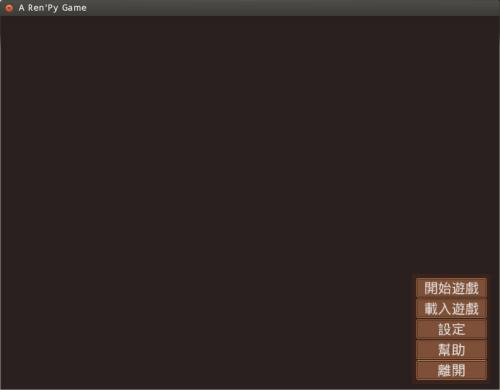
▲ 圖1：左上角的那串文字就是視窗標題。
尋找下面這行：
config.window_title = u"A Ren'Py Game"
將其改換為您想要的文字，比方說：
config.window_title = u"好朋友們的遊樂場"
【字串前面的 u 是什麼意思】簡單地說，沒有任何意思。
......喂喂！用食物來玩耍是不道德的行為，雞蛋和番茄是不允許的......那個榴槤當然也不行！給我住手啊啊啊啊！
......感謝您把榴槤放下。
好吧，正確說起來，字串前面的 u 表示，這個字串被明確指定為用 unicode 編碼方式儲存。
在很久以前的 Ren'Py 版本中，如果您想要在字串中打入中文、日文、英文、俄文之類的非拉丁文字母，您就得在字串前面加個 u，否則程式不是掛掉就是會冒出亂碼。不過隨著時代演進，Ren'Py 引擎已經能夠主動幫您處理這些小細節了。一言以蔽之，這是個歷史遺留問題。
所以說，對於那個 u，假裝沒看到就行了。請不用在意。
前面調整過後，啟動一下看看。
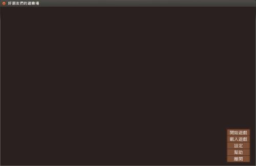
▲ 圖2：這是比例調整過後的遊戲畫面。請注意，左上角的視窗標題也改變了。
效果不錯，好，我們繼續調些別的。
開發者
啟用開發者模式
在開發者模式中，Ren'Py 提供了一些特別的功能，幫助遊戲製作者測試遊戲。
要使用開發者模式，您必須將以下的變數設為 True......
config.developer = True
如此一來，您就能在遊戲運行中透過 shift + D 啟動「開發者選單」，或用 Shift + R 快速地重新載入整個遊戲。之外 Ren'Py 還會在遊戲中提供許多細小的調整，可以幫助您更容易編輯遊戲並除錯。
開發者模式提供很多方便，製作遊戲時建議打開，但如果給心懷不軌的玩家發現，他們說不定就會拿來作弊。因此釋出遊戲前最好將本選項關閉，設定為 False。
【真假值：True 與 False】在 Python 語言中，關於「真假」、「對錯」、「是否」這些二元性質東西……正如前面的示例，是用 True 與 False 這兩個值來表示的。其中 True 表示肯定，False 表示否定。
在程式語言中，這一般被稱為真假值或布林值（boolean 或 bool）；而用來儲存真假值的變數，也被稱為布林變數。像上例中的 config.developer 變數，那就是一個布林變數。
這種需要將值設定成真假值的變數，在後面還會見到很多。
菲兒：「使用 True 與 False 時，請記得首字大寫。大小寫弄錯意思是不一樣的。」
【變數類型】遊戲中某個變數是什麼類型（文字／數字／布林值／其他類型），那並不是由程式強制規定的……而是由創造這個變數的人，與使用變數的人的「默契」來決定的。
換句話說，也就因為沒有強制規定，所以如果您想在 config.developer 中填入文字或數字也是可行的，只是這樣一來遊戲的運作可能會讓您很困惑，甚至出錯。所以請儘量別耍特技。必要時可以查查官方手冊。
開發者工具的使用方式
開發者工具非常方便強大，此處簡單解說一下使用方式。
快速重啟
首先是大力推荐的快速重啟 Shift + R。
使用這個熱鍵後，遊戲會立刻被中斷，然後重新啟動。重啟後的遊戲不會從頭開始，而是會從剛剛遊戲重啟的地點繼續下去。一言以蔽之，按下 Shift + R，遊戲會依照自動存檔、關閉、啟動、讀檔......這樣的順序來運行。
您可以在腳本中修改對話文字、調整 options.rpy 設定、變更 ui 面板、增加 menu 選項......然後用 Shift + R 快速重啟，立刻察看全新效果。請務必好好利用這個功能。
開發者面板
要調出開發者工具面板，請在遊戲中按下 Shift + D。
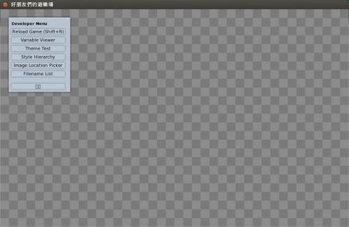
▲ 圖3：按下 Shift + D 畫面會暫時清空並調出開發者選單。
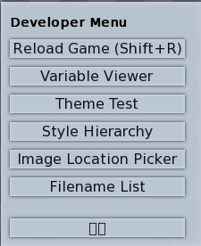
▲ 圖4：開發者選單的細部。
「......啊！有字消失了。」
抱歉，若您的遊戲套用了 "translations.rpy" 翻譯檔，其中有部份文字會變成可口的鳳梨酥形狀。
就如您所想，這是中文的翻譯內容沒有字型支援造成的。不過開發者選單的字型設定，並沒有被包括在 style 繼承體系之內，所以咱無論如何找不到方法解決。請各位忍耐一下，反正玩家通常是看不到這部份的。
以下依序介紹選單中的各功能：
- Reload Game（重新載入遊戲）
很好用的功能。前面提過，這裡不重複。 - Variable Viewer（變數觀察器）
變數觀察器可讓您檢查遊戲執行到現在，內部變數究竟變成了怎樣－－比方說，可以用來檢查好感度目前有多少之類的。
不過話又說回來，此處卻也不會老實將所有變數都顯示出來，而只會顯示被遊戲的「存讀檔系統」列入管理的變數......
「什麼啊！有些變數居然不會被存檔儲存嗎？」我聽到有人發出這樣的慘叫了。但變數管理是個蠻大的題目，其中有不少東西可說，咱們日後再挖。 - Theme Test（介面主題測試）
可以快速瀏覽各種介面元件的樣本，比方說按鈕、滑棒、輸入框等等。當您手動調整 Theme 時可以試試看。
手動調整 Theme 的方法等下您就會看到。 - Style Hierarchy（風格繼承體系）
可以讓您觀察遊戲中各個 style 是怎樣建立繼承關係的。日後我們開始搞 style 系統時您自然用得到，現在不管。 - Image Location Picker（圖片座標撿選器）
您可以用這東西來察看遊戲中的每張圖片，並定位個別圖片中，任意點的座標。這項功能在確認圖片的 anchor（錨）位置時，多少能派上用場。不過這種功能 Gimp 之類的圖片編輯軟體也有，圖個方便而已，倒不是非用不可啦。
您可以試試看效果好不好。
......什麼？您問圖片上的「錨」是什麼意思？這不好解釋啦，日後深入圖片議題時再細講吧。 - Filename List（檔案清單）
會列出所有 game 資料夾下的檔案。在下覺得沒啥大用，各位請自行參考。 - 最下面，文字顯示不出來的格子其實就是「離開」。此外，用 Esc 也能跳出。
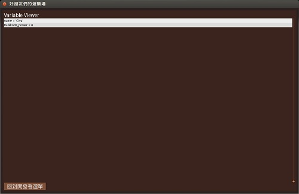
▲ 圖5：Variable Viewer（變數觀察器），用這個可觀察遊戲內部的變數狀態。順便一提，此圖證明了在下並不是渣。
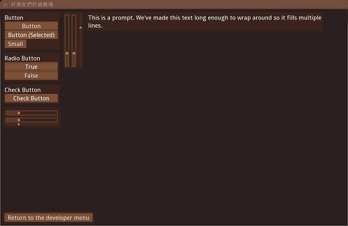
▲ 圖6：Theme Test（介面主題測試）的畫面。可以瀏覽各種元件，在當前 theme 設定下的基本造型。
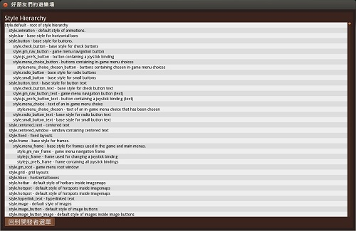
▲ 圖7：Style Hierarchy（風格繼承體系）的畫面。可以看出各 style 的內部繼承關係。
除了以上用選單列出的功能，開發者模式中還有一些額外的快速鍵與功能可以使用。完整說明請參考官網這裡：https://www.renpy.org/wiki/renpy/doc/reference/Developer_Tools
開發代號與版本號
與開發者有關的設定，除了 config.developer 以外，還有遊戲的開發代號與版本號。
config.name = "A Ren'Py Game" # 遊戲的開發代號
config.version = "0.0" # 遊戲的版本說明
這兩則訊息平常用處不大，但還是順手改改。請注意兩個變數都必須是字串。
例外畫面與例外處理
前面設定的「開發代號」與「版本號」會被用在哪裡？
事實上，當您的遊戲出錯時，您就會看到它了。請看以下圖片：
▲ 圖8：這是遊戲出現「例外 (Exception)」時的畫面。它會告訴您這次的「例外」究竟發生在哪裡。
參考上圖的範例（請點擊放大），"While running game code:" 這個段落將告訴您，「和錯誤直接相關的語句」究竟在哪個檔案的哪一行中。您可以點下面的藍色連結直接打開那個檔案。除此之外，在藍色連結底下還有一小行關於例外的簡述。
在上圖中所犯的錯誤，被 Ren'Py 遊戲引擎描述為「Sayer 'se' is not defined」－－很明顯我在腳本中用了一個尚未定義的，叫作 se 的敘事者（可能是我忘記定義，也可能是打錯字）。而藍色部份的描述還進一步告訴我，這個錯誤位置是在 script.rpy 檔案的第 16 行中......
情報如此充份，要解決錯誤應該不困難。
請好好利用例外畫面吧。
【例外 (Exception) 與錯誤 (Error) 有什麼不同？】嚴格說來，Python（以及 Ren'Py 腳本）中並沒有純粹的「錯誤」的概念。它所有的錯誤，本質上都只是一種「例外」。
稱其為「例外」的意思是說：只要您有辦法處理例外，那麼例外就不會成為問題，而僅僅只是說碰到了一種特殊的情境，需要搭配特殊的處理方式......僅僅只是如此而已！
當然囉，特事要特辦。想處理例外，您當然有必要為此額外寫些程式碼，手把手地教遊戲引擎如何處理它。否則未經處理的特例和錯誤就是相同的意思。
如何處理例外不好說明，本文並不會談。因此至少在此，您不用太過煩惱「例外」與「錯誤」的分別，請把例外直接當成錯誤。本節目日後也會隨意混用這兩個詞的。
下方的 "Full traceback:" 進一步提供了整條「例外鏈」，不過您幾乎用不著，看不懂就不用管它。
最下方則是一些訊息，包括：
- 「當前主機資訊」：Linux？mac？64 bit 或 32 bit？
- 「遊戲引擎版本號」：某些版本的 Ren'Py 可能會在某些小地方有瑕疵，總之等官方改版後修復吧。
- 「遊戲名稱」：就是您先前設定的 config.name
- 「遊戲版本號」：就是您先前設定的 config.version
這些訊息，在您進行內部測試時看似多餘，但當您釋出遊戲後，玩家不幸地看到藍色故障畫面跑來向您抱怨時，以上的資料就能大大幫助您替玩家排解困難－－消費者服務可是很重要的啊！
例外畫面底部共有五個按鈕（如果遊戲把 config.developer 設為 False，那就只會出現四個）。從左至右依次為：
- Rollback：退回上一步。
用這功能退回（還沒出錯時的）上一步，然後趕快存個檔。再測試此處時就不用把整個遊戲重跑一次。 - Ignore：忽略錯誤，將出錯那行跳過。
玩家碰到錯誤畫面，這大概是他們最好的選擇了。然而身為遊戲製作者，您當然不該用它。 - Reload：重新啟動遊戲。
- Open Traceback：用文字瀏覽器打開 traceback 檔案來排除錯誤。
這個檔案的內容，和「例外畫面」所顯示的東西大同小異。在我這邊從沒派上用場過，不過您還是可以參考一下。 - Quit：離開，把遊戲關掉。
就這樣。
theme 介面主題風格
沿著 options.rpy 檔案繼續往下翻，我們來看看 theme 部份。
本節目第一回時，我們聊過如何透過啟動器選出一個 theme。然而用啟動器選擇，畢竟比不上直接打色碼來得自由自在。以下將會展現用手動方式設定 theme 的方法。
請看下面的程式碼。
theme.diamond(
widget = "#BF7C51", # 指定「控制項」的顏色
widget_hover = "#dda570", # 指定「控制項」的顏色（被滑鼠滑過時，或用鍵盤將游標移到上面時）
widget_text = "#E5DFDF", # 指定「控制項中文字」的顏色
widget_selected = "#ffffff", # 指定「控制項中文字」的顏色（特指被選中時的顏色。比方說在遊戲「設定畫面」中的「視窗」與「全螢幕」之間，一定有一個是處於「被選中」的狀態。）
disabled = "#ab6038", # 指定「控制項」的顏色（當某些控制項無法互動－－比方說按鈕不能按時，控制項就會呈現這個顏色）
disabled_text = "#BF7C51", # 指定「控制項中文字」的顏色（當某些控制項無法互動－－比方說按鈕不能按時，文字就會變成這個顏色）
label = "#ffffff", # 指定「label文字」的顏色
frame = "#49271b", # 指定「frame」的顏色
mm_root = "#2a201f", # 指定「主選單」的背景－－所謂主選單，就是您進入遊戲時第一個見到的那個選單畫面。
gm_root = "#2a201f", # 指定「遊戲選單」的背景－－所謂遊戲選單，就是您在遊戲中按滑鼠右鍵，可以選儲存與設定的那個選單。
rounded_window = False, # 指定「是否套用邊框圓角」（對於部份 theme 沒有效果，比方說在 diamond theme 中就是沒用的）
)
（如果您當初選的 theme 和我選的不同，這段內容也會略有差異。但別擔心，都大同小異的。）
如果您以前寫過程式，您會注意到，theme 的設定其實是透過一個「函式」來進行的。
【函式 (function)】在 Python 程式中，某些變數可能是一個「函式」，就像上面的 theme.diamond。
所謂的函式，大致上可被理解為：一組被打包好的工作流程。
比方說一個計算圓周率的函式 pi。具體要怎麼算，我們完全不需要知道，只要簡單地執行 "pi()" ，圓周率就會算出來了。
如上面示範的，函式可以透過在後面接上 "()" 來「運行」（寫程式的人通常稱這個動作為「呼叫」）。
有些函式的 () 裡，可以加入一些「參數」，就像是數學中常見的表示法 "f(x)" 那樣。
比方說一個計算複利的函式，您可能就必須要填入本金、計息次數之類的東西，才能求出最終結果，寫法就像是 interest(money = 10000, cycle = 12) 或 interest(10000, 12) 這樣。
還有些函式功能比較特殊，並不見得會直接回給您解答，但它們會在私底下做一些事來改變系統狀態。比方說可能有個函式叫「Initialize（初始化）」，你執行它，它不會回應給您任何東西，但可能會調整主程式裡的某些部份。本小節中的 "theme.diamond" 就是這種函式，它會變更您遊戲的整體介面風格。
theme 設定函式提供了很多參數可以任您調整：
參數 widget、widget_hover、widget_text、widget_selected、disabled、disabled_text、label、frame 這幾個，律定了整體介面面板中各種顏色的預設值。其中包括按鈕的顏色、滑鼠滑過按鈕的顏色、文字顏色等等等。大多都寫在這裡了。
如果對當前畫面顏色不滿，請嘗試調整參數色碼看看。
【只是預設值】菲兒：「theme 設定的僅僅只是預設值而已。所以如果你想在某個特別的按鈕上用一些不同的顏色，那也是可以做到的。不過設定方法一時很難說清楚，改天再說吧。」
mm_root 和 gm_root 這兩個參數略有不同，是用來設定 main menu（遊戲主選單）與 game menu（遊戲選單，或稱右鍵選單）背景用的。您可以將它設定為任意顏色或任意圖片，甚至是某種程度的小動畫......
「那就放動畫！」
不不不給我等等你也衝太快了你！動畫基礎不夠還沒法講。這邊暫時還是先放圖片頂著吧。頂著！
想指定圖片，直接用圖檔路徑來指定就行了。如下：
mm_root = "bg/main_menu.jpg", # 路徑是相對於 game 資料夾的
哦！有一件事差點忘了。咱要警告各位，如果用打字方式手動修改 theme，之後又透過啟動器介面變更 theme－－哪怕只是換著玩的－－您先前手打的東西也會如同夏日的營火般消失在淚光盡頭。請務必慎之。手賤是沒藥救的......
「嗯，我覺得嘴賤也是......」
【widget、label、frame】在 theme 設定函式中，您會見到一堆讓人腦仁發脹的專有名詞，比方說 widget、label、frame 之類的。這些都是圖形程式設計中常見的東西。但除非您是死程式宅，否則不懂也是理所當然的，因此這邊最低限度地說明一下。
widget 一般被翻譯為「控制項」或「控件」。不過雖然翻成了中文，這麼說您一定還是不懂......
更具體地說吧，widget 是指能夠控制電腦行為、能被使用者操作的「虛擬面板元件」啦。比方說您一定在螢幕上見過的「按鈕」、「滑棒」、「勾選框」......是的，widget 就是那類東西的通稱！
label 一般被翻譯為標籤，但這與您先前（第三回）見過的 label 完全不是同一回事。
它是特指「顯示在螢幕上的，但不能被使用者操作的某些標示性文字」。比方說打開設定視窗，您會在某些滑棒旁邊看到「音樂大小」、「音效大小」之類的文字。這些文字點了也沒反應，不會與玩家互動，所以不是 widget，他們只是「label（標籤）」而已。label 通常只被用來標誌某些 widget 的功用，作為一種輔助提示的手段。
不過在遊戲中，您可能還會發現一些文字雖然不能和使用者互動，但同時他們卻也不是 label。比方說渲染成圖片的文字，或是對話窗裡的文字。呃......我承認這蠻難分別的，有時我也會搞錯......總之不要在意細節！請勤於測試。
frame 一般被翻譯為框架。是指用來兜組其他介面元件的那種東西。比方說預設的主選單中，有「開始遊戲」、「載入遊戲」、「設定」、「幫助」、「離開」五個按鈕，而 frame 就是把那五個按鈕框成一組的東西。
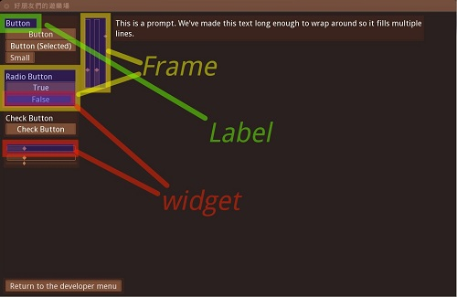
▲ 圖9：Widget、Label 與 Frame。注意上圖並沒有把所有同類項目都圈出來，因為畫面會太亂......
以上介紹完畢！如果還是無法理解就實戰看看吧。挑個顯眼的顏色套上去，哪邊會變色一看就知道了！
style 調整
「style」是 Ren'Py 所使用的一套畫面風格定製機制。之前我們修改 theme 的時候，說到底其實也是在調整 style 系統，只不過在函式的包裹下完全自動化了而已。
Ren'Py 的 style 系統相當強大，但也相當複雜。日後還會細講，此處只是稍微使用一下。
先來看看。在 theme 設定的下方，有一大堆由 style 開頭的，用 # 號註解起來的行：
...
# style.window.background = Frame("ui/frame.png", 49, 49, tile = True)
# style.window.left_margin = 6
# style.window.right_margin = 6
# style.window.top_margin = 6
# style.window.bottom_margin = 6
# style.window.left_padding = 6
# style.window.right_padding = 6
# style.window.top_padding = 6
# style.window.bottom_padding = 6
# style.window.yminimum = 250
...
這些行都是關於 style 的設定。
【# 註解的應用技巧】早先提過，電腦會無視 # 號後面的註解文字。
所以說，以上這些 style 開頭的程式碼，目前都處在「電腦看不到」的狀態下。
對於寫程式的人來說，註解除了說明以外，還是一種能「將無效程式碼保留在檔案中」的好辦法－－不需要刪掉程式碼，只是將它註解起來。日後若要重新啟用，只要去掉 # 號就好，手續簡單方便！您寫遊戲時也可大肆運用這種技巧。
......記得對齊哦。
對話框背景
遊戲中的對話框，預設是個半透明的黑框，或許您會想要修改它？
請找到以下這行：
# style.window.background = Frame("frame.png", 12, 12)
透過 style.window.background，您可指定預設對話框的背景圖案或背景色。如果您需要一個裝飾華麗的對話框，就從這裡下手。
您可以像指定主選單背景圖那樣，直接指定一張圖片。像下面這個：
style.window.background = "ui/dialogue_background.png"
如果您用直接貼圖的方式給一個對話框背景，那就必須使用尺寸剛好等於對話框大小的圖檔。否則有可能造成預期外的顯示效果......
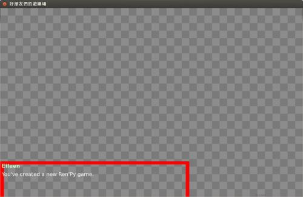
▲ 圖10：用一個 800 x 400 px 大小的紅框作為對話框背景來測試。嗯，效果看起來稍微有點悽慘。
以上圖片只是示範而已，別擔心，這種離譜的狀況不見得會發生，好好調整的話，固定式對話框還是能完美對上的。當然要如何對齊，也與您選擇的解析度有關。
請注意對話框框體與背景圖之間，對齊位置是左上角。如果您想要強制律定對話框高度，請用稍候會見到的 style.window.yminimum 變數，來控制對話框的最小高度。
【強制鎖定對話框大小？】既然能透過 style.window.yminimum 限制對話框的最小高度，那我們可不可以直接「鎖定」對話框大小呢？讓對話框大小永不改變，這樣不就萬無一失了嗎？
結論是不行的！
因為對話框實際需要多高，說到底是由您在對話框中塞多少字數來決定的。如果您的一句話就是那麼長，總不能讓字消失或是被截掉吧？
不希望文字高度過高，導致精美的固定式對話框背景對不上，您就必須手動控制您每個句子的字數，讓字數不超過某個限額。此外別無他法。
或者說，您也可以考慮動態對話框。見下。
關於對話框這種會隨文字數量，隨時可能會「動態變更面積大小」的圖片，使用 Frame() 函式來建立通常是更好的主意。注意一下這邊的 Frame()，和剛剛才解說過的「框架」不是同一回事。
Frame() 函數是這樣用的：
首先，您得先有一個對話框構造藍圖，比方說像是下面這個。
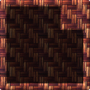
▲ 圖11：編藤風格的對話框設計圖，是我做的，以 CC-BY 授權釋出。您可以拿去玩玩看。
將其放到 game 資料夾下隨便什麼地方，比方說 ui/frame.png 這個位置。
然後修改 style.window.background 為以下內容：
style.window.background = Frame("ui/frame.png", 49, 49, tile = True)
請看上面的程式碼：Frame() 的第一個參數是圖檔路徑，第二個參數與第三個參數是 x 軸與 y 軸的「邊框寬度」；至於後面的 tile 若為 True，則表示「動態延展的部份」將採用拼磚的方式產生；若為 False，則表示用拉伸的方式產生。
x 軸邊框與 y 軸邊框要設多寬？動態延展的部份是要採用拉伸還是拼磚？這都是由對話框圖片本身規格而決定的，並無定值。以上程式碼中所設的值僅僅適合咱這張圖片。當您自訂對話框時，必須自行琢磨一下理想數值為何。
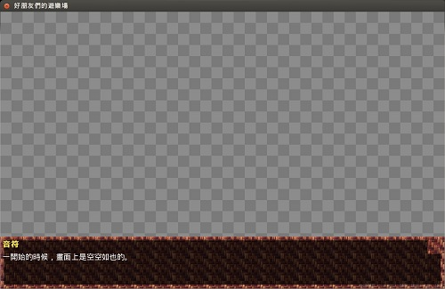
▲ 圖12：看吧，使用 Frame() 製作對話框背景，在遊戲中就可以依需要自動伸展大小。
用 Frame 製作的對話框背景，好處是可以動態伸展、動態變更窗體大小，而不會因為字數過多而意外爆格，但製作時要用點巧思就是了。如果依然覺得很難懂，搞不清楚 Frame 是怎麼運作的，那就看看官方手冊怎麼講好了。
對話與對話框邊緣留白
請注意上圖，關於這張圖片中的對話框，還有兩處可以調整的地方。
- 喂喂......文字居然壓到對話框的邊框上面？這也太隨便了吧！
- 對話框背景緊鄰著視窗邊緣，也許不夠好看......？
想調整這些東西，您必須要理解 margin 與 padding 的概念。margin 代表「螢幕邊緣，到對話框背景的邊緣之距離」；padding 代表「對話框背景的邊緣，到文字邊緣的距離」。
margin 與 padding 都分為上下左右四個邊，可以分開設定，如下面這樣：
style.window.left_margin = 6
style.window.right_margin = 6
style.window.top_margin = 6
style.window.bottom_margin = 6
style.window.left_padding = 16
style.window.right_padding = 16
style.window.top_padding = 16
style.window.bottom_padding = 16
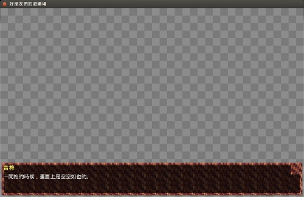
▲ 圖13：僅設定 margin 的示意圖。可在對話框週邊留下空間。
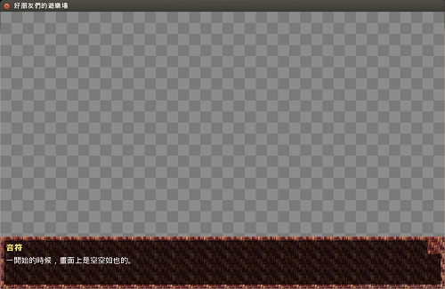
▲ 圖14：僅設定 padding 時的示意圖，可在對話框內部留下空間。注意文字部份不再壓到背景的邊框了。
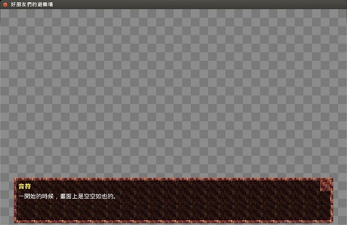
▲ 圖15：本圖同時設定 margin 與 padding，且 margin 的左右側設得比較大。由於覺得對話框高度略矮，還順便修改了一下 yminimum......因此對話框稍微長高了一點點。
這樣效果還算不錯！來看看別的吧。
字體與字型的設定
往下您可能會看到一系列由 style.mm_menu_frame 開頭的（被註解掉的）變數。這些變數是舊時代的遺物，現在已經沒在用了，直接跳過，看 font（字型）的設定。
檔案中只列出了兩項，分別為 style.default.font 與 style.default.size。
style.default.font 第二回時就囉唆過了，沒設定好就連中文也顯示不出來，您應該已經把它搞定了才是。至於 style.default.size，則是用來指定遊戲預設文字大小的，請自行斟酌調節。在沒有調整時預設大小為 22，我覺得 24 還不錯看，推荐給各位。
style.default.size 只影響對話框等少數地方的文字大小，而不會變更按鈕與標籤，這讓畫面樣式變得略有些許不平衡。如果要調整這兩處文字大小，您得另外補上 style.button_text.size 與 style.label_text.size 這兩個變數。如下：
style.default.size = 24
style.button_text.size = 24
style.label_text.size = 24
聲音調控
您可以指定讓遊戲在某些特殊時刻，播放特殊的音樂或音效。
比較常用的有下面幾個：
# config.enter_sound = "click.wav" # 進入 game menu 時的音效
# config.exit_sound = "click.wav" # 離開 game menu 時的音效
# style.button.activate_sound = "click.wav" # 在遊戲中按按鈕時，會發出的音效
# config.main_menu_music = "main_menu_theme.ogg" # 這行定義在主選單 (main menu) 中，會播放什麼音樂。
另外在 options.rpy 檔案中，還有三個 config.has_ 開頭的選項：
config.has_sound = True
config.has_music = True
config.has_voice = True
旁邊的註解說，以上這些變數能控制遊戲中的聲音系統是否要啟動。不過實務上卻沒有使用的必要－－不播音樂自然就沒有音樂，這顯然不需要刻意設定。特別是我翻遍官方手冊與 wiki 也找不到這些變數的說明，總覺得有點可疑......建議別動它們。
指定玩家手冊
進入遊戲後，主畫面上不是有個「幫助」按鈕嗎？
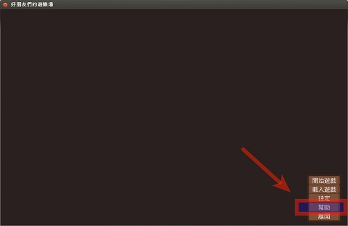
▲ 圖16：幫助按鈕在此。
config.help = "README.html"
透過上面這行，您能指定玩家按下「幫助」按鈕後，哪個檔案會被打開。
依據官方文件，您指定的檔案應該要能被網頁瀏覽器打開。不過我們這邊測試的結果，任何能被使用者電腦打開的檔案，似乎都能被接受，而且還能用正確的程式開啟運作......這測試結果僅供參考啦。各位有興趣的人可以自行深入測試看看。
說明檔案的路徑（很少見地）是基於 base 資料夾，而非 game 資料夾。還請稍微留意一下。
指定主要畫面間的轉場特效
記得 Transition（轉場）是什麼嗎？
......沒錯！就是接在 with 關鍵字後面的那些東西。這在第三回解釋過了，不懂的同學請回去複習。
在以下段落中，您可指定某些基本畫面切換時，所要自動套用的轉場效果。包括以下這些：
config.enter_transition = None # 進入遊戲選單（右鍵選單）時的轉場方式
config.exit_transition = None # 脫離遊戲選單（右鍵選單）時的轉場方式
config.intra_transition = None # 在主選單、遊戲選單、設定畫面、存讀檔畫面中交叉切換時的內部轉場方式。
config.main_game_transition = None # 試不出效果，不推荐使用
config.game_main_transition = None # 試不出效果，不推荐使用
config.end_splash_transition = None # 開啟遊戲，第一次進入主選單時的轉場方式
config.end_game_transition = None # 遊戲結束（碰到 return）跳回主選單時的轉場方式。
config.after_load_transition = None # 在 load 畫面載入遊戲時會採用的轉場方式
config.window_show_transition = None # 顯式秀出對話框時使用的轉場方式（不過您目前還不知道怎麼操作）
config.window_hide_transition = None # 顯式關閉對話框時使用的轉場方式（不過您目前還不知道怎麼操作）
您可以將其設定為 fade、dissolve 等之前提過的值。
如果設為 None 則表示不要使用任何轉場效果。
【程式中的 None 是什麼？】 可濃：「None 就是『什麼都沒有』。」
啊啊，回答非常精確，但不懂的同學恐怕還是不懂......
這麼說吧：0 某些時候可用來代表「沒有」，"" 是一個「空字串」，False 代表「否定」......大多數時候，我們想表示「無」這個狀態時，靠 0、False 或空字串就能辦到。
但說到底，數字依然是數字，字串也始終是個字串，「否定」和「無」也不完全相同。
在程式中，有時我們會想要去表示真正的無，這時候我們就會使用 None 來表示「什麼都沒有」、「什麼都不是」、「甚至連零或空字串也當不成」的「真無」狀態。
輸入 None 時要注意字首大寫，不然無法被電腦識別。和 True 與 False 一樣。
指定遊戲存檔位置
config.save_directory 這變數可用來指定您遊戲的存檔位置。如下：
python early:
config.save_directory = "Welcome-1347312978"
Ren'Py 預設給您的存檔資料夾名稱，是遊戲的開發代號再加上一個隨機數。隨機數是為了避免與其他遊戲的開發代號發生衝突而用的，嫌隨機數礙眼就把它拿掉吧。
遊戲的存檔資料夾放置位置，在不同平台下各有不同：
- Windows %APPDATA%/RenPy/save_directory
- Mac OS X
~/Library/RenPy/save_directory - linux other
~/.renpy/save_directory
是的，Ren'Py 預設不會將存檔放在遊戲資料夾中，而是會另行藏在電腦裡面，故刪除遊戲並不至於一起弄丟存檔。此外還可直接在光碟一類的唯讀媒體中執行，而無需複製到硬碟中。
如果您對以上存檔放置路徑不滿，您也可以（在不指定 config.save_directory 的狀況下）透過另一個變數 config.savedir 強行指定存檔資料夾的絕對路徑。
需注意，無論是 config.save_directory 或 config.savedir，都只能在 python early 區塊底下設定。
常用的預設值
遊戲中有部份設定值，能允許玩家在遊戲選單中自行調節。但在使用者意識到這些設定是能夠調整的之前，作者也會有最初的設定值供玩家立刻上手使用，這就是接下來要講的預設值。
這些預設值，多半是由一些以 config.default_ 開頭的變數決定。
翻找 options.rpy，尋找以下兩個變數：
config.default_fullscreen = False
config.default_text_cps = 0
config.default_fullscreen 顧名思義，可用來設定第一次開啟遊戲時是否要使用全螢幕。未改動之前預設為 False （不用全螢幕）。
至於 config.default_text_cps 是用來調整「文字的顯示速度」的。cps 是「characters per second（字元每秒）」的意思。0 表示速度無限快。此外的其他數字，愈大表示文字流出速度愈快。
對中文遊戲來說，每秒 20 ~ 40 個字是不錯的速度。還請各位實測看看。
另外，此處雖設定了遊戲「整體」的文字流出速度，但其實針對不同的敘事者，我們也可以個別控制他們的文字流速的－－具體說來，您可以模擬出講話急噪，或溫吞到讓人想抓狂的悠哉角色......這不是非常有趣嗎？
這些預設值正如其名，僅僅只影響遊戲「第一次被執行」時的狀況。當第二次啟動後，就不會再對遊戲起影響，而是會由使用者設定接手。所以如果您想要反覆測試效果，請在再次執行前，於啟動器面板中點擊 Delete Persistent（刪除永久性資料），才能測出真正效果。永久性資料為何在第一回時聊過了，有必要時還請參考一下。
建立分發版
如果您已經試著建立過分發版－－或至少有嘗試進入過建立分發版的畫面（見第一回），您應該能夠在 options.rpy 檔案最下方發現許多以 build. 開頭的變數。這些變數就是建立分發版時所需設定的參數。
建立分發版時需要設定的東西很雜，以下僅就最常被用到，又最讓人感到困惑的部份，稍微說明一下心得。關於詳細參考資料，還請見官網這一頁：https://www.renpy.org/doc/html/build.html。
基本設定
以下兩行可以指定「執行檔檔名」與「遊戲資料夾名稱」：
build.directory_name = "Welcome-1.0" # 決定遊戲資料夾名稱。但依據平台不同，會在最後附上 -win 之類的後綴。
build.executable_name = "Welcome" # 決定遊戲執行檔檔名，但不含副檔名。依據平台不同，會自動決定正確的附檔名。
加密與略去
Ren'Py 遊戲引擎支援替遊戲資源「加密」的功能。
簡單地說吧。這個功能可確保玩家無法手動挖掘您的遊戲資料夾，偷看您的遊戲圖檔與故事腳本。人性本惡是個好假設，否則網路上也就不會有那麼多ＣＧ包在四處流傳了。
我們可在建立分發版時，透過 build.classify() 函式來加密（或略去）某些檔案。
它是這樣用的：
build.classify(檔名匹配模式, 分類名)
build.classify() 會將所有滿足「檔名匹配模式」的檔案，歸入指定的「分類」中。依檔案所屬分類不同，遊戲在打包這些檔案時也會採用不同的處理方式。
分類會被如何處理等會兒再說，我們先看「檔名匹配模式」是什麼。
「檔名匹配模式」是一個「以 base 資料夾為根目錄的路徑名」，路徑中的英文字母不分大小寫。還可包含以下的特殊匹配符號：
- /
匹配目錄分隔符號。 - *
匹配（除了目錄分隔符號外的）所有文字。 - **
匹配所有文字，含目錄分隔符號。
舉例如下：
build.classify('game/char/**', 'archive') # 將 game/char 資料夾下的一切檔案放入 archive 分類中
build.classify('game/*.rpy', 'archive') # 將 game 資料夾下，附檔名為 rpy 的檔案放入 archive 分類中
build.classofy('README_win.html', 'windows') # 將 base 資料夾下的 README_win.html 檔案放入 windows 分類中
Ren'Py 預設提供了以下幾個分類：
- 'all'
此分類的檔案，會以未加密的形式被放進所有分發版中。所有未經 build.classify() 設定的檔案，預設都放在這裡。 - 'linux'
檔案會被加入 linux 發行版中 - 'mac'
檔案會被加入 mac 發行版中 - 'windows'
檔案會被加入 windows 發行版中 - 'archive'
這個分類中的檔案會被合併並加密起來，變成一個獨立的 archive.rpa 檔案，就像一個獨立的加密壓縮檔那樣。
如果您希望把圖片或腳本隱藏起來，不讓讀者偷看、修改，就把他們放到這個分類中。只是官方也說得很明白，這並不是完美的加密，只是防止玩家簡單地大量複製而已......那個，防君子不防小人的。 - None
本分類的檔案在打包時會被忽略掉。
比方說您的遊戲資料夾中，可能有編輯器殘留下的暫存檔之類的，就可以用這種方式將其過濾掉。請小心不要把重要的檔案也略去了。
其他設定項目
除了一開始就被放在 options.rpy 中的設定項外，還有些大讚的設定項目可用。以下用力推荐給各位。
自動圖片定義
想在 Ren'Py 遊戲腳本中使用圖片，必須先替圖片定義，這在 Ren'Py 中是個常識。就如同以下這條語句：
image pic name = "path/name.png" # 定義一張名叫 pic name 的圖片
定義本身不難，一行就能搞定。不過如果您有一百，甚至是一千張圖檔......
「哇，聽起來好像很辛苦呢？」
不是什麼「好像很辛苦呢♪」而已你這傢伙！不要給我說得那麼輕鬆啊！那是值得向夕陽……不對！因為熬夜的關係根本就只能向朝陽淚奔的情節吧，自己去試試看啊！
「怎麼好像發現了很明顯的內心創傷......」
很好，夠了！聽我說啦！
不用呼喚上帝媽祖與魔法少女，Ren'Py 本身內建了自動圖片定義的服務。就透過設定以下兩個變數：
config.automatic_images = ['_', '/'] # 定義分隔符號 config.automatic_images_strip = ['char', 'bg'] # 刪掉不需要的前綴
【[ ] 中括號】如您所見，以上兩個變數被指定為：「一群被中括號括起來，又用逗號分開」的東西。
對於初學者來說，等號右邊這一大串東西，顯然讓人很頭痛......
別緊張，此處的中括號其實只是一個「列表 (list)」而已；而括號裡用逗點分開的東西，則是儲存在列表中的「元素」
那究竟什麼是列表？
所謂的列表，是一個「容量可變的有序元素容器」－－沒錯，列表就是一種用來收藏資料的容器。就像置物櫃一樣。而其中所儲存的東西，一律被通稱為「元素」。
元素可以是任何類型的資料，比方說字串、數字或布林值都可以；甚至列表裡面再放入其他列表，那也不在話下。
在 Python 語言中除了列表以外，還有很多其他類型的容器，其中有些容量不可變化，有些是無序的，用途各有不同。日後見到他們再談。
Ren'Py 會掃描 game 資料夾下所有檔案，並將 png 與 jpg 圖檔找出來，然後把副檔名去掉。接著用 config.automatic_image 所設定的分隔符號，將（包含路徑的）檔名切開。
比方說以下幾個檔案：
item/ufo_black.png char/info_happy.png bg/library.png bg/library_night.jpg
依照前面 config.automatic_images 設定的值，圖片名稱將會被切割成：
item ufo black # / 與 _ 成為分隔符號 char info happy # / 與 _ 成為分隔符號 bg library # 只有 / 成為分隔符號 bg library night # / 與 _ 成為分隔符號
然後再用 config.automatic_images_strip 中設定的內容，將不必要的前綴裁掉。
依照先前的設定為例，圖片名字將變成為：
item ufo black # 沒有任何東西被裁掉 info happy # char 被裁掉 library # bg 被裁掉 library night # bg 被裁掉
而其中，「只有圖片名字在兩截以上」的圖片，才會列入自動圖片定義的範圍。
所以最後您會得到三個被定義好的圖片，分別為：
item ufo black info happy library night
以上三張圖片的自動定義，等效於手打以下三行：
image item ufo black = "item/ufo_black.png" image info happy = "char/info_happy.png" image library night = "bg/library_night.jpg"
 「（安慰的語氣）好啦好啦，只要小心照規則替圖檔命名，就能享受圖片自動定義的好處。以後不用再淚奔了啦！」
「（安慰的語氣）好啦好啦，只要小心照規則替圖檔命名，就能享受圖片自動定義的好處。以後不用再淚奔了啦！」
滑鼠游標自定義
黑白箭頭的游標實在太過無趣？想換滑鼠游標，怎麼辦？
cursor_default_frame1 = ("檔名1", hotspot_x, hotspot_y) # 設定一個單獨的「禎」
cursor_default_frame2 = ("檔名2", hotspot_x, hotspot_y) # 設定另一禎，多禎交替播放能造成動畫效果。
cursor_default = [cursor_default_frame1, cursor_default_frame2] # 將多個禎放在列表中，會依序播放。
config.mouse = {'default': cursor_default} # 將設定好的游標（含動畫）定名為 'default'
每個單獨的游標－－如上面範例中的 cursor_default－－都是由一個 list（列表）構成的。而列表中的每一個元素，都代表了一「禎 (frame)」，游標會以每秒 20 禎的播放速度（也就是 20 Hz）在禎與禎之間進行切換，由此組成游標動畫。
每一個單獨的「禎」，都是一個有三項元素的元組 (tuple)。
元組中第一個元素代表著該禎所用的圖檔檔名，而後兩個元素則代表著這張圖片的 hotspot 的座標。
config.mouse 是一個存放著遊戲中所有可用滑鼠游標的字典 (dict)，其「鍵」就是游標的名稱。預設名稱包括："default", "say", "with", "menu", "prompt", "imagemap", "pause", "mainmenu" 與 "gamemenu"……這些名字應該很容易顧名思義，故不特別介紹。
如果您實在搞不懂，如同上面的示範，只設定 "default" 一項就準沒錯了。
【元組 (tuple) 與字典 (dict)】前面說過，除了列表以外，Python 中還有許多其他的容器元素，沒想到這麼快就碰上了。
這回擋在我們程式碼前面準備投誠的兩個傢伙，叫「元組 (tuple)」與「字典 (dict)」。
「元組 (tuple)」的特性與列表很像，同樣具有順序性；但與列表相比，一旦建立完成，它就完全不允許使用者對它進行任何修改。你可以把他視為功能限制版的列表來對待。
那，為什麼要用這種功能不全的版本？全部用列表不行嗎？
全用列表是可以啦。但元組速度比較快，消耗的記憶體也比較少－－理由僅僅是如此而已。
元組的表示法是用小括號括起，用逗點將元素分開。就如同上例中的 cursor_default_frame1 那樣，請自行參考。
再來看看「字典 (dict)」
字典雖然是容器，同樣可裝有大量元素作為內容，但它的運作邏輯與列表、元組都完全不同。
字典的特性是每個元素都是一個「鍵值對 (Key-value pair)」。您可以告訴字典您想要的資料之「鍵 (Key)」，然後字典就會將值 (value) 回覆給你。所謂的「鍵」，就像真正字典後面的索引一樣。
字典和列表不同，內部的元素並沒有順序性，您固然可以將字典從頭到尾讀一遍，但哪個元素先被讀到哪個元素後被讀到是沒保證的，或說，是隨機的。
它的強項在於可以用「特定的鍵」來存取特定一筆資料，而且速度非常快，具體說來，不管整本字典裡面放了兩筆資料還是兩百萬筆資料，存取速度都會保持一樣快，反之列表與元組這時就會慢得跟睡著了的烏龜差不多，讓人悲傷。
在順序不重要，且需要用「鍵」隨機存取資料的場合，字典差不多總是能派上用場。
字典的表示法是用大括號將眾多元素括起；內部用冒號分開鍵與值，用逗點分開各元素。如下： dict_demo = {key1: value1, key2: value2, key3: value3, ...... }
上面的 config.mouse 就是一個字典（不過其中只有一個元素而已）。
【hotspot 熱點】hotspot 是游標的一項重要屬性。
您可以想像一下，一張游標圖片本身有寬度也有高度。假設您現在正在玩踩地雷遊戲，遊戲中的地雷格子很小又全部擠成一團，當您按下滑鼠左鍵，想要點一個格子時，究竟是哪個格子被點到呢？畢竟游標的圖片比較大，一次壓到了四五個格子啊！
所謂的 hotspot 就是說明，圖片中究竟是哪個點（用座標表示）才會實際和電腦中的元件互動，至於其他部份，僅僅只是當作視覺上的裝飾品而已。
通常箭頭形游標會將熱點設在箭頭尖端，手指形游標會設在指尖，圓形或 I 形游標會設在圖片中間......總之熱點各有不同。
無論如何，您可以透過開發者工具中的 Image Location Picker 來確認圖片上的座標，進而去設定熱點的位置。
區段觀念補完
一路走到這邊，遊戲設定總算大致完成了（終於！）。不過如果各位觀眾願意，咱打算在此幫各位回顧一下最基本的東西……沒錯！那就是我們之前所碰到各個區段名稱。
我們前述絕大部份的設定，都是被放在遊戲腳本的某些區段 (block) 之下。
沒注意到？沒關係啦，總之就像下面這樣：
init python:
# 設定內容
init -1 python hide:
# 設定內容
init:
# 設定內容
以上就是我們在 options.rpy 中碰到的區塊。想起來了嗎？
嗯？很混亂？
初始區段 (init block)
安心安心，這沒您想像中的那麼難啦。還記得在第三回中我們提過的「初始區段 (init block)」嗎？「每個檔案開頭的地方就是初始區段」、「圖片與角色必須要在初始區段中指派或定義」－－各位還記得這樣的說詞嗎？
實話實說，除了檔案開頭處，其他地方也是可以插入初始區段的。
只要您使用以下語句：
init:
# 這個內部就是初始區段
image library = "bg/library.png"
此處複習一下：您在初始區段中進行的設定，會在遊戲被載入的瞬間－－也就是在連主選單都還沒出現之前－－就被立刻執行完畢。不管這個區塊是被放在遊戲的哪個檔案中，又或是被放在檔案的最尾端，那都不例外。
初始區段的執行順序
不管初始區段放在哪裡，都能一次性地載入並執行完成……嗯，這是很好啦，但有些時候，我們還是會需要 Ren'Py「有順序地」去運行初始區段。
比方說我們可能在某個初始區段中設定了一幅圖或一個變數，而這幅圖或變數，可能會在其他的初始區段中被我們使用。
這時候，我們就有必要規定一個初始區段早些執行，而另一個初始區段放晚點執行。
手法非常簡單，就像這樣：
init -1:
# 後執行的內容
init -2:
# 先執行的內容
您可以在 init 後面加上數字，數字愈小的區段就會愈先被執行完畢；至於數字相同的初始區段，其執行順序是不分先後的，只能放入平行性質的工作。
初始區段的執行順序如果沒有被顯式指定的話，那預設就是 0。
Python 與 init Python 區段
如此一來，稍微能看懂先前那些 init 是在幹嘛了吧？但有些初始區段後面除了數字，還會加上 python 之類的字樣，那又代表什麼？
在說這個之前，我們先看看 Ren'Py 中另一種 block－－Python block：
python:
# python 程式碼
lisa_point = lisa_point + 1
yuri_point = yuri_point - 1
以上就是一個標準的 python block。功能等同於：
$ lisa_point = lisa_point + 1 $ yuri_point = yuri_point - 1
很明顯能看出，Python block （Python 區段）是用來集中放置您的 Python 程式碼的地方。
本節目在第三回時介紹過，我們在寫 Ren'Py 腳本時，如果想半路插入一句 Python 腳本，可以用 $ 作為前綴，標註這行後面的內容是用 Python 寫成的。不過如果您打算寫個八行十行 Python 腳本，那麼直接用 python block 會比用 $ 表示更快更清晰。
回到原題。init python: 這種區段，就僅僅只是把 Python 區段與 init 區段合併起來而已。
有些 Python 區段後面，還會加上「hide」的標示，這與變數的命名空間有關。然而因為我馬上就要下班了......說錯了！是這部份牽扯到很多細節，各位短時間內也用不到，暫時也就體貼各位地先去不囉唆啦。
尾聲
那麼今天的心得就到此為止了！
「啊嗚......」
「這個......」
「這還真是體貼啊......」
......嗯？什麼？我只是稍微說、說錯話而已，可沒有把心裡話說出來啊！請不要有各種多餘的誤解。
「不......心裡話什麼的，應該是不會誤解才對……雖說下班確實很重要......」
「（點頭點頭）」
是、是嗎？沒有誤解就好......但為什麼要那樣看我呢？
咳。不管了。
Ren'Py 的設定項目極其之多，本節目這邊也只介紹了較常用且（個人覺得）較好用的部份。如果您希望有更完整全面的設定說明，推荐各位研究官方手冊的這一頁：https://www.renpy.org/doc/html/config.html。
話說回來，這還真是囉唆的一回哪，說起台詞份量，都快直抵先前的兩回了，腳本確實夠厚（翻動翻動）......不不不......等等！給我等等啊！這根本就已經達到先前兩回的份量了吧！難怪我覺得今天好像沒什麼吐嘈的閒暇（？）......真是令人傷腦筋！
設定您好，設定掰掰。耶～♪
下次的內容，會講到角色台詞中的文字表現法。包括字體大小、字型樣式、文字流速動態控制、動態插入變數、動態插入圖片、還有更多......想要在正文中混上表情符號嗎？想要將「紳士」的發音注為「ㄅ｜ㄢˋ ㄊㄞˋ」嗎？......要理解這些充滿著愛與夢想的內容，您絕對不可錯過下回！
「嗚哇......你這算哪門子的愛與夢想啊？」
什麼嘛，不要嘲笑別人的夢想！
不過......嗯，話又說回來，會被嘲笑的夢想，才有實現的價值啊！對，比方說成為尼特......（被摀住）
「嗯，話又說回來，菲兒我今天早上還沒有倒垃圾呢......總之各位觀眾，請千萬不要抱有太過腐敗的夢想哦！」
「那個，嗚，大家下次再見～」
妳想幹什麼？......等等菲兒，垃圾桶是不可能的！住手啊啊啊啊啊......
（本回完✞）
You may be interested in the following articles:
- 《雪凡與好朋友們的 Ren'Py 遊戲引擎初學心得提示》第九回：變數管理與 Screen 系統 - 2013-09-08
- 《雪凡與好朋友們的 Ren'Py 遊戲引擎初學心得提示》第八回：大雜煮與黑暗鍋！ - 2013-05-13
- 《雪凡與好朋友們的 Ren'Py 遊戲引擎初學心得提示》第七回：粒子之下，色彩之上 - 2013-03-06
- 《雪凡與好朋友們的 Ren'Py 遊戲引擎初學心得提示》第六回：Displayable 與動畫轉置語言 - 2013-01-09
- 《雪凡與好朋友們的 Ren'Py 遊戲引擎初學心得提示》第五回：所以說語言是人類文明的瑰寶 - 2012-12-10
- 《雪凡與好朋友們的 Ren'Py 遊戲引擎初學心得提示》第三回：電子小說快速上手！ - 2012-11-01
- 《雪凡與好朋友們的 Ren'Py 遊戲引擎初學心得提示》第二回：基本觀念與前置作業！ - 2012-10-18
- 《雪凡與好朋友們的 Ren'Py 遊戲引擎初學心得提示》第一回：Ren'Py 是什麼？ - 2012-09-24
Special


Address：No.128, Sec.2, Academia Rd., Institute of Information Science, Academia Sinica, Nangang District, Taipei City 11529, Taiwan (R.O.C).
Privacy Policy. Terms-of-use

Comments
但對於如何製作自定的Theme 還是沒有去實踐，像是自定sli der 的圖像素材之類，之前只研究到能 調整到顏色而已，還是得從設好的 Theme套件中選一個風格出來
查了google之後看到最接近 的答案是下面這個文章
lemmasoft.renai.us/.../...
不知道有沒有機會看到圖文好讀版 (期待~)
什麼？自定Theme？
嘖嘖，您玩得還真是深入啊這位同 學。
不管怎麼說，咱這邊還是會先試著 把基礎項目給鬼扯完啦，之後再看 看有沒有機會搞它一把，跳進去研 究看看。
老實說總覺得會溺死……這話題我 暫時還不敢碰啊！
在此一區塊中「宣告」的變數，會 放在一個擁有「隨機名稱」的命名 空間中（因為不知道名稱為何，基 本上無法日後再次存取）。一言以 蔽之，在 hide 內宣告的變數將不會汙染全域變數 命名空間；儘管如此，hide 區塊中依然可以透明地直接存取全 域變數。
……說來也不難啦。但我實在很難 三言兩語對沒有程式編寫經驗的人 說明這套邏輯，或是說明這有什麼 用……
如果您對我的解說不滿，可以去看 看手冊此處的解釋：
renpy.org/.../...
我有一个问题请教一下，如何在菜 单哪里加入音乐，就是进入游戏主 菜单就响起音乐
config.main_menu_music = "music/bgm.ogg"
就這麼簡單～
記得音樂檔得用有支援的格式哦！ （可用格式包括 ogg, mp3, wav，見下方聯結）
www.renpy.org/.../Audio
……等等，這設定法正文中也有寫 啊XD